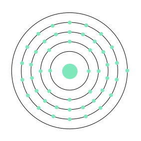

Name: Silver
Formula: Ag
Atomic Number: 47
Group: 11
Block: d
Period: 5
Relative Atomic Mass: 107.868
Discovery Date: 3000BC
Appearance: Relatively soft, shiny metal.
Uses: Jewellery, silver tableware, mirrors, dental alloys,solder, batteries, antibacterial uses.


Atomic Structure:
